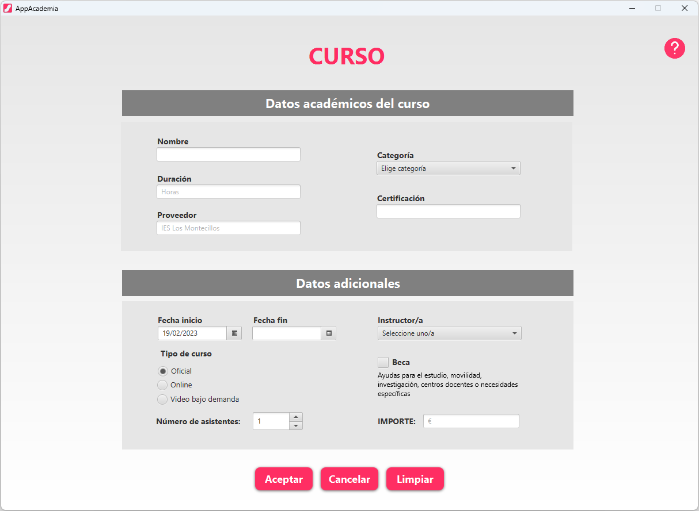
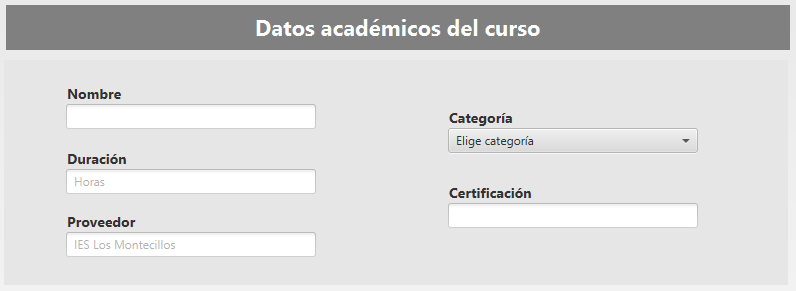
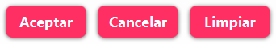
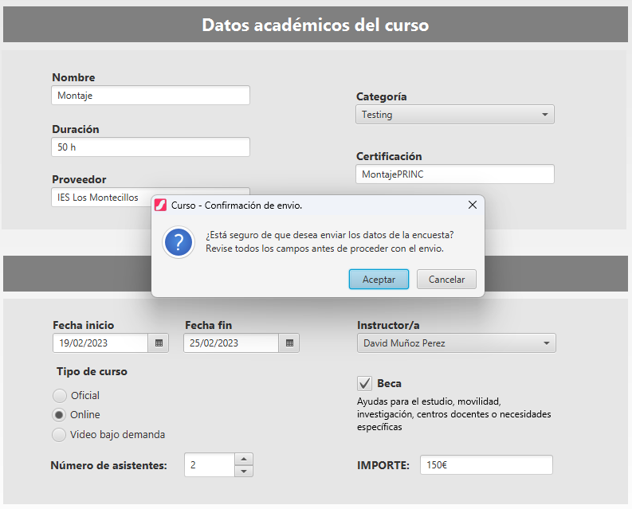
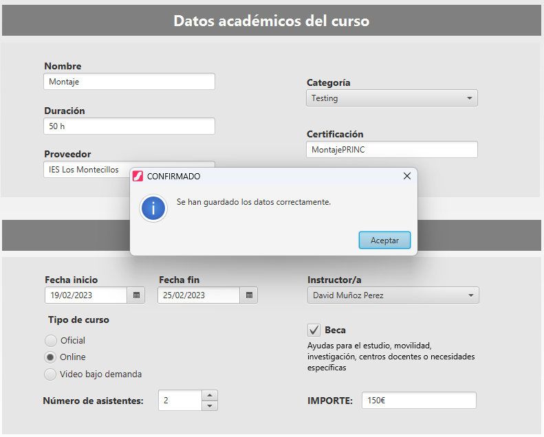
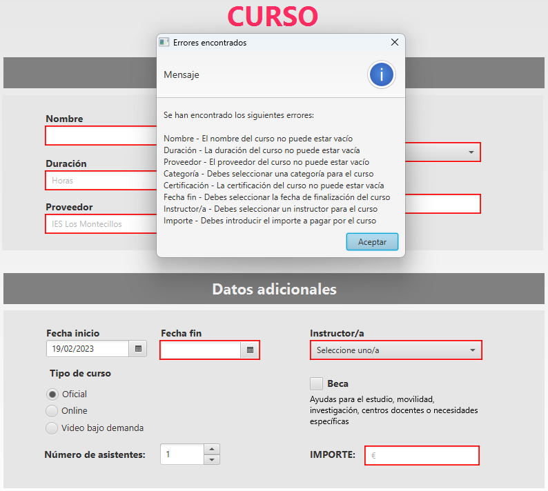

En la siguiente imagen se ve la escena curso. En ella podremos rellenar los campos para así poder añadir un curso a nuestra base de datos.

En la zona superior encontraremos el apartado “Datos académicos del curso”, en él, tendremos un conjunto de campos con sus etiquetas asociadas, los cuales son los siguientes:

Nombre: debemos introducir el nombre del curso.
Duración: debemos introducir la duración del curso, dicho dato debe estar expresado en horas.
Proveedor: debemos introducir el proveedor del curso.
Categoría: debemos seleccionar una categoría de entre las posibles.
Certificación: debemos introducir el tipo de certificación que obtendremos con el curso.
En la zona inferior encontraremos el apartado “Datos adicionales”, en él, tendremos un conjunto de campos con sus etiquetas asociadas, los cuales son los siguientes:
Fecha de inicio: seleccionaremos la fecha de inicio del curso. Esta por defecto será la del día actual. No podrá seleccionar una fecha de inicio anterior a la del día actual.
Fecha de fin: seleccionaremos la fecha de fin del curso. No podrá seleccionar una fecha de fin anterior a la fecha de inicio.
Número de asistentes: indicaremos el número de asistentes del curso. Podemos modificar este campo tanto “manualmente” o mediante el uso del Spinner.
Instructor/a: debemos seleccionar un instructor de entre los posibles.
Tipo: nos permite seleccionar el tipo de curso, pudiendo elegir ente Oficial, Online, y Video bajo demanda
Beca: indica si dicho curso está acogido a algún tipo de ayuda.
Importe: debemos introducir el coste del curso. A la cantidad numérica introducida se le añade el formato moneda (€) automáticamente.
En la parte inferior de la App encontraremos los siguientes botones:

Aceptar: informará al usuario si está seguro que desea realizar la operación. En caso de aceptar y tener todos los datos introducidos correctamente, introducirá los datos en la base de datos y nos mostrará una alerta de confirmación, seguidamente, se limpiarán los campos para poder introducir un nuevo curso.


En caso de cancelar volverá a la vista de modificación de datos.
Si al pulsar el botón aceptar tenemos campos vacíos o con errores nos mostrará una alerta con los errores que debemos corregir, además se marcarán dichos campos con errores de color rojo como vemos en la siguiente imagen.

Cancelar: devuelve a la pantalla principal sin realizar ninguna acción.
Limpiar: vaciará los datos que hayan introducidos en los campos hasta el momento.